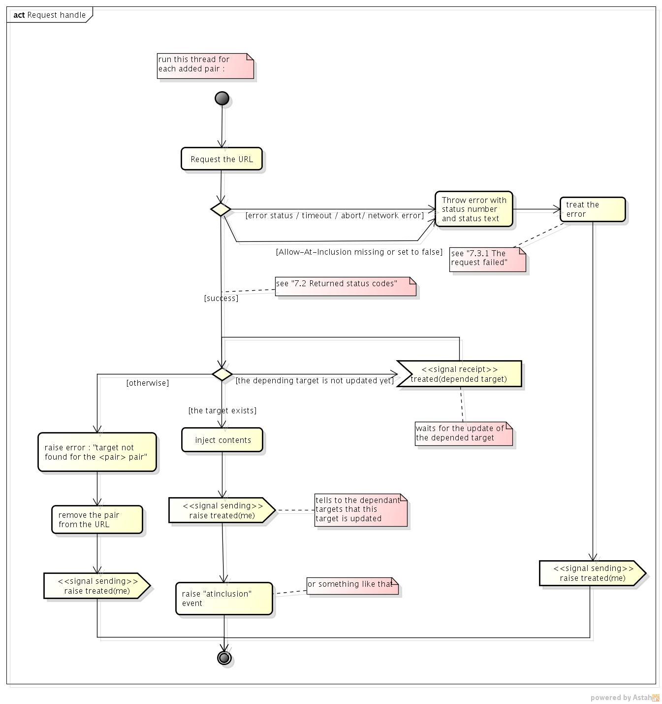

At inclusion
Abstract
Ajaxising a website has several benefits, as well for the webmasters as for their users [1] :
- it reduces the waiting time, since only a part of the document is requested;
- it makes the interface more responsive, since only a part of the document is changed;
- it reduces traffic between the server and the client, the linked scripts or CSS files are transferred only at the document load;
- you can customize what happens when contents are requested, for example by adding animations.
However, there are five main drawbacks to use Ajax :
- development time and cost is high;
- without framework, XMLHttpRequest is complex, and requires to know JavaScript;
- ensuring that the website is indexed is not trivial;
- some visitors do not have a browser with JavaScript enabled, and would not navigate through the website if the webmaster does not provide a solution;
- managing the history and binding the URL to the current page is clearly difficult;
At inclusion aims at keeping the benefits of Ajax and at finding a solution to each drawback, by:
- providing an easy way to request and to inject remote contents;
- updating the URL and managing history as the user loads contents, so he can bookmark or share the URL of the current page;
- giving to search engines the ability to index websites using At Inclusion;
- being compatible with clients having JavaScript disabled;
Definitions
- Inclusion (via URLs) : any possible way to include remote contents in the current document via the URL (example: https://twitter.com/#!/w3c);
- At Inclusion : the proposed way to make inclusions;
- At Inclusion pair : a pair of this form : CONTAINER_ID=URL;
- At Inclusion string : a string containing a set of At Inclusion pairs;
- At Inclusion operation : the proposed ways to add, to remove and to replace At Inclusion pairs;
- Operation string : a string containing a set of At Inclusion operations.
Objectives
Ease of use
Whereas XMLHttpRequest is a complex object for beginners (who often use librairies instead of it directly),
the feature must cover with an easy and rapid way the use case of the injection of remote HTML content, which is one of the most frequent.
A declarative approach would satisfy that constraint.
Security strength
The feature must prevent the user from creating security issues. The ability to handle inclusions in URLs is not only given to the webmaster, but also to anyone.
If the webmaster did not pointed out this issue, the user can easily create this king of URL:
http://mysite/mypage.html#SOMEWHERE_UNEXPECTED=/something_I_dont_want_there.html
So the feature must go with a mechanism that gives the control to the webmaster to put only what they want in only where they want.
Crawlability
Making cralable an ajaxised website is one of the hardest challenges for a webmaster.
The feature must propose a declarative, simple and stupid way to ajaxise the website so the crawlers can browse it.
Bookmarkability and shareability
Often bound with the problem of making a website crawlable, bookmarkability is another challenge for the webmaster.
So as it browses the website, the user-agent must update the URL of the location bar and propose to the visitor to bookmark (or share the URL) at any moment.
And obviously, when bookmarked, a link must lead to the same content (except when the webmaster has updated the page).
The At Inclusion String
At inclusion is a part of the structure of URL (like the query string), which gives to the user-agent the contents to include in the document. An At Inclusion string is described by comma-separated series of pairs. Each pair contains :
- the key which is the ID of the element where to inject the contents. We also name it the target ID and we call the matching element the target element;
- the value which is the URL that leads to the contents to load. These contents are HTML content fragments.
I do not know which elements can be a target. See Which elements can be a target.
The At Inclusion string is located after the pathname, after the query string if it exists, and before the hash string. An example of At Inclusion string is :
@id1=/to/my/remote/content.html,id2=relativepath/to/content.html
and an example of a full URL having an At Inclusion string :
http://www.example.com/rep/mypage.html?query_key1=value1&@id1=/to/my/remote/content.html,id2=relativepath/to/content.html#hashstring
When you set the At Inclusion string, only the contents of the targets whose URL have changed are updated (and the document is not fully reloaded).
When you change the content of a target element, the old content is put aside and removed from the document by the user-agent. This old content will be referred below as the default content.
Dealing with nested At Inclusion pairs
Nested At Inclusion is the situation when you have a At Inclusion pair whose target exists only after another pair is loaded.
Let us name the first pair the dependant pair and the second the depended pair.
The URL with these two pairs must have this form :
http://mysite/document.html@...DEPENDED_TARGET=DEPENDED_URL,...,DEPENDED_TARGET.DEPENDANT_TARGET=DEPENDANT_URL
You would have noticed these two particularities :
- the depended pair is specified before the dependant pair;
- the depandant target is preceded by "DEPENDED_TARGET.". The benefit of such a method is that the user-agent knows the order of the HTML injection (first the depended target, then the dependant target);
If the dependant pair is the depended target of another pair, the target ID of the latter have to be preceded by only its direct depended pair :
http://mysite/document.html@...T1=URL1,...,T1.T2=URL2,...,T2.T3=URL3
Considering that example :
Main document:
content1.html :
content2.html :
content3.html :
And we want to produce that result :
We can see that target3 depends on target1. Then the following URLs are correct :
- @target2=content2.html,target1=content1.html,target1.target3=content3.html
- @target1=content1.html,target2=content2.html,target1.target3=content3.html
- @target1=content1.html,target1.target3=content3.html,target2=content2.html
But these URL are incorrect :
- @target2=content2.html,target1=content1.html,target3=content3.html
=> because target3 is not prefixed; - @target2=content2.html,target1.target3=content3.html,target1=content1.html
=> because target3 is specified before target1.
At Inclusion operations
The At Inclusion operations consist in adding, replacing or removing pairs in the At Inclusion string. The string containing these operations will be referred below as the operation string.
To remove an existing pair and restore the default content in the target, the operation string must include the minus (-) operator, followed by the target ID. For example: '@-target1'.
To add a new pair or to replace an existing one, the operation string must include the plus (+) operator followed by the pair to add/replace. For example: '@+target1=url1'.
In the case of an addition, the pair is appended to the At Inclusion string, and in the case of a replacement, the new pair takes the place of the old one
NOTES:
- you can mix the operations. For example: "@+target1=url1,-target2,+target3=url3...";
- The operation string must begin with '@+' or '@-';
- The operation string and the At Inclusion string are dissimilar. Obviously, this kind of At Inclusion string would be meaningless : '@id1=url1,-id2,+id3=url2...'
- In an operation string, if no operation is specified before a pair, the latest operator is reused. For example, in "@+target1=url1,target2=url2,-target3", the second pair is not directly preceded by an operator, so the latest operator used (+) is reused.
Processing the requests
When the user-agent receives an URL with an At Inclusion string, it requests the main page and the URL of the At Inclusion pairs in separated threads. As the main document is parsed, the user-agent replaces each target of the At Inclusion pairs by the HTML chunk if the latter is loaded. Otherwise, the user-agent displays the content of the target element, and inject the chunk once the request is finished.
To avoid security issue, when processing the requests of the URLs in At Inclusion pairs, the server must answer to each of them with this header :
Allow-At-Inclusion: /to/my/document.html@id1 /to/my/otherdocument.html@id2 ...
With this example, the requested contents can only be injected into :
- the element of ID id1 present in the document located at /to/my/document.html
- the element of ID id2 present in the document located at /to/my/otherdocument.html
- and so on ...
NOTE: a way to use CORS with At Inclusion needs to be discussed.
Here is an activity diagram of how the requests would be handled:

Setting At Inclusion pairs
Through HTMLAnchor Element
To create an At Inclusion hyperlink, the At Inclusion string must be specified in an href attribute of an anchor:
<a href='@target1=/to/content1.html,target2=/to/content2.html...'>Link text</a>
And one can also specify an operation string in it :
<a href='@+target1=/to/content1.html...'>Link text</a>
Through window.location API (JavaScript)
The location.atinclusion property gets or sets the At Inclusion string in the URL. Moreover, an operation string can also be given to the setter :
location.atinclusion = '@target1=/to/content1.html';
location.atinclusion; // == '@target1=/to/content1.html
location.atinclusion += ',target2=/to/content2.html';
location.atinclusion; // == '@target1=/to/content1.html,target2=/to/content2.html'
location.atinclusion = '@-target2,+target3=/to/content3.html';
location.atinclusion; // == '@target1=/to/content1.html,target3=/to/content3.html'
When an At Inclusion string or an At Inclusion operation string is given to location directly, the behaviour is the same as above :
location = '@target1=/to/content1.html';
location.atinclusion; // == '@target1=/to/content1.html'
...
Example of implementation
A concrete example of implementation is given here :
http://fflorent.github.com/HUX
Some points have not implemented yet, though:
- the HTTP headers for security;
- the dependant pairs are not prefixed.
This site uses At Inclusion through the HUX Framework.
Remaining questions
Here are questions, needing to go further with that proposition
Extension for files with HTML fragments
Since we use files that do not have valid HTML content, is it pertinent to use the .html extension for these files? Perhaps the extension .htmlfr, that would stand for HTML fragment, would be a better choice ?
Deal with several elements having the same ID
Even if that it should never occur, how should the user-agent deal when the target ID of an At Inclusion pair matches with several elements ?
I think the question is easy to answer: the user-agent injects the content in the first pair in the DOM matching the ID, and then raise a warning.
Which elements can be a target ?
I would be very "liberal" with that question : any html element, descendant of <body>, that can have an ID attribute and at least a child element or text could be a target, except <script> and <style>
But what about elements that are not specified in the HTML5 specifications ?
Events
I think that there should be events that would go with the At Inclusion requests :
- on request begins
- on request succeeded
- on request error
- on targets updated (after request is succeeded)
Animations ?
I would also see the ability to do animations with that feature (even if that is not highly crucial) :
- before the targets are being updated
- after the targets are being udpated
- while the requests are running
The question is : how to trigger these animations ? Via Javascript ? Via CSS modifiers ?